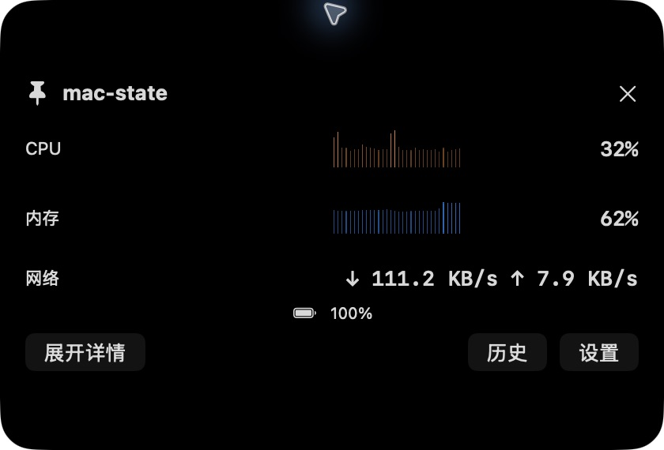

需要时，轻轻展开。
悬停预览，点击固定。没有刘海的屏幕，也能在顶部中央使用。
为 Mac 而生 · 免费开源
CPU、内存、网络，就在屏幕顶部。
下载 Mac 版v1.1.0 · macOS 11+ · Intel 与 Apple Silicon

悬停预览，点击固定。没有刘海的屏幕，也能在顶部中央使用。
查看磁盘容量与电池，回看近期趋势，或将历史记录导出为 CSV。
监测数据在本机处理，无需注册，不向开发者上传。
将 mac-state 拖入「应用程序」。
在屏幕顶部，查看你的 Mac 状态。
可以。无刘海显示器使用顶部中央入口；是否在全屏时显示，可在设置中选择。
小组件刷新由 macOS 调度。本版提供 macOS 热状态，不提供温度、风扇转速及磁盘实时吞吐读数。